NEO website: 8-page SEO check, 26.11.2026
Version 1.0 · 26.11.2026
Result in one line
All 6 content pages now score green on the Yoast-style check. Overall readiness went from 86 to 93 out of 100. The site is not ready to send to Google yet: the contact form still needs a consent box and a clear target, and some facts need Raoul's answers.
The 8 pages
| Page (new address) | Search term | Score before → after | SEO gate |
|---|---|---|---|
| / (home) | online marketing agentur | 57 → 91 | not passed |
| /seo-agentur/ | seo agentur | 82 → 94 | not passed |
| /google-ads-agentur/ | google ads agentur | 57 → 96 | passed* |
| /social-media-agentur/ | social media agentur | 57 → 96 | passed* |
| /webdesign-agentur/ | webdesign agentur | 57 → 96 | passed* |
| /neo-the-agency/ (about us) | neo the agency | 58 → 93 | not passed |
| /impressum | legal page | 62 → 93 | technical pass |
| /datenschutz | legal page | 62 → 93 | technical pass |
* Passed under our house rule that headings are never written as questions. The checker marks that one point down; the house rule wins.
Old addresses (/services/google-ads, /services/social-media, /services/websites, /uber-uns) now forward to the new ones.
What was fixed
- Every page address now carries its search term; old addresses forward permanently to the new ones.
- New page titles and Google descriptions on all 8 pages.
- Search term placed in the main heading, the first paragraph and the image descriptions.
- Each page now tells Google what it is about in its hidden page data, including its questions and answers, and shows a visible "Stand: 26.11.2026" date.
- Menu, footer and links inside the pages point to the new addresses.
- Easier-to-read sentences and paragraphs.
- A loading error on some pages fixed; the German version is now always shown.
- On phones, the text over the bright header video now has a dark tint so it is readable.
Visual check
All 8 pages checked on the live site at desktop width (1440) and phone width (375). 16 screenshots in screens/. Nothing broken.
What still blocks Google submission (needs Raoul)
Question numbers refer to the owner interview in SEO/neo-owner-interview-2026-11-26/.
| What is missing | Where to answer |
|---|---|
| A named author for the pages | Part A |
| Contact form: consent box and where enquiries go | Part B / legal |
| Real facts for the questions on Home and About us | P0x |
| Office city: Berlin or Bonn (our Facebook page, number 2 on Google, says Bonn) | P26 / Part B |
| Prices | P03-Q2, P05-Q4, Part D |
| Proof for "ROAS 5.2×" and "−42% cost per lead" | P01-Q3, P04-Q2 |
| Google Partner status | Part C |
| Which website systems we build on | P05-Q2 |
| Short answer block for AI search | P02 |
| Webdesign page for a city | P05 |
| Claims "rankt ab Tag 1" and "Seite 1 in 90 Tagen": keep, prove or drop | — |
| Stock team photos shown with real names | — |
| Google Business Profile not checked yet (needs Raoul's sign-in) | — |
The automatic check covers only 34% of all points. The rest needs these facts or a human look.
What the Google top 10 has that we don't
- online marketing agentur: visibility in AI search, questions and answers, a named contact person, Google and Meta partner badges.
- seo agentur: prices ("ab 1.000 €"), the working steps, an audit offer, customer quotes, "who this is for", how to choose an agency.
- google ads agentur: campaign types, notice period, Google Partner badge.
- social media agentur: influencer work, content creation, community management, organic vs paid.
- webdesign agentur: Google shows only Munich agencies (people search locally), which supports a city page. Rivals name their website system, their steps, cases with numbers and an office address.
- neo the agency: we rank number 1; Google still shows the old English title until it re-reads the page.
Screenshots

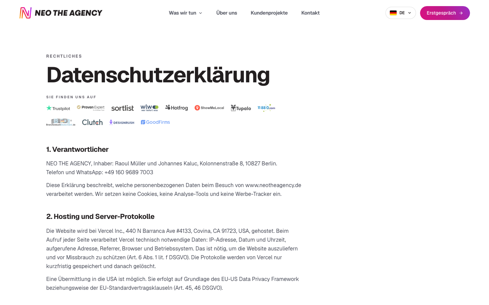
datenschutz-1440.png
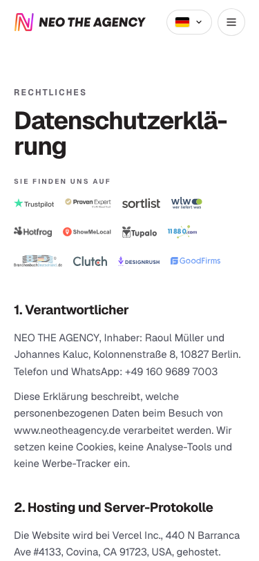
datenschutz-375.png
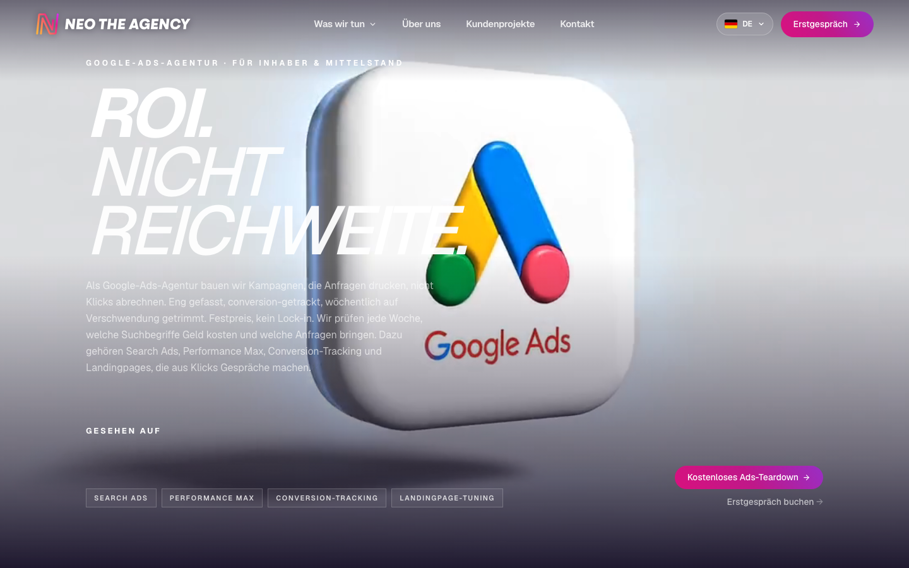
google-ads-agentur-1440.png
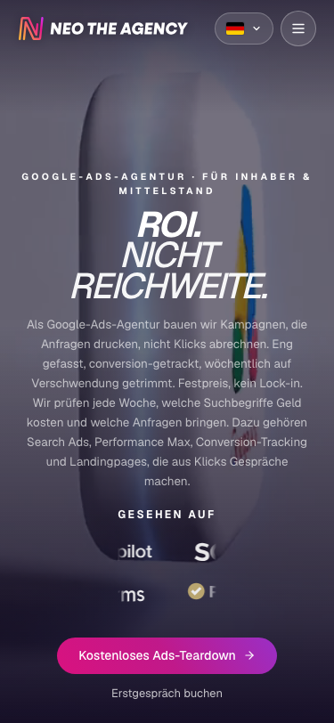
google-ads-agentur-375.png
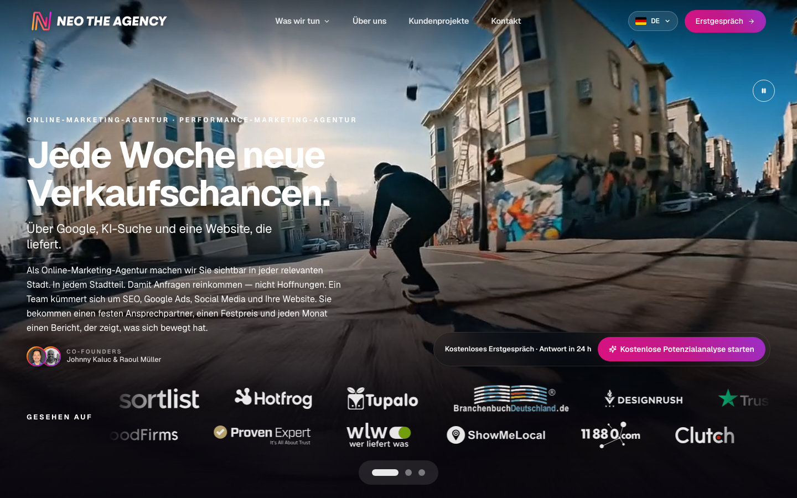
home-1440.png
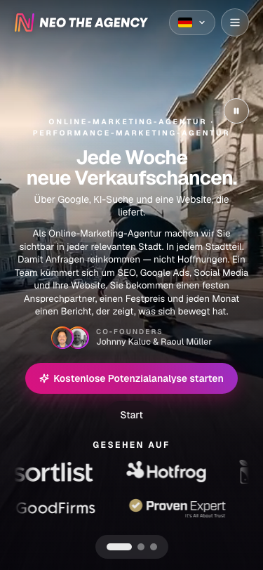
home-375.png
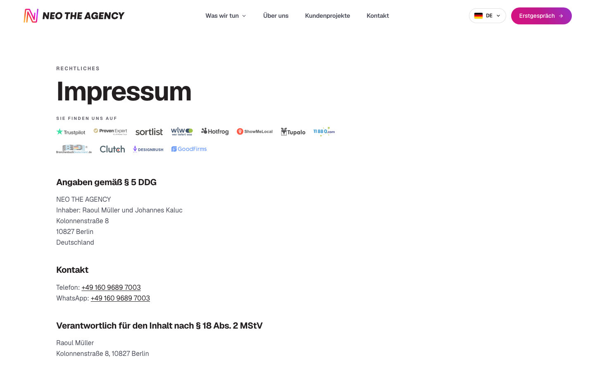
impressum-1440.png
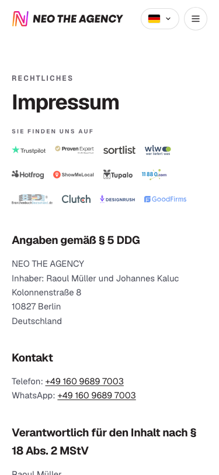
impressum-375.png
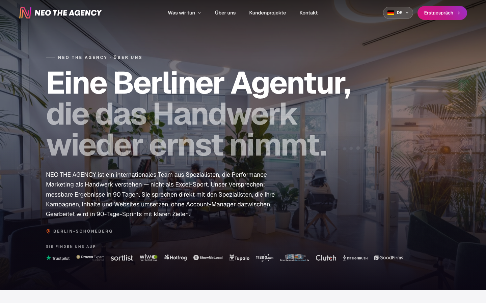
neo-the-agency-1440.png
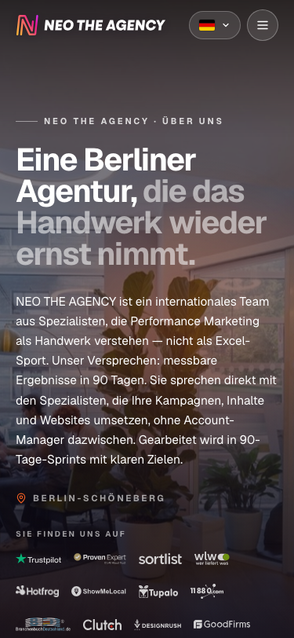
neo-the-agency-375.png
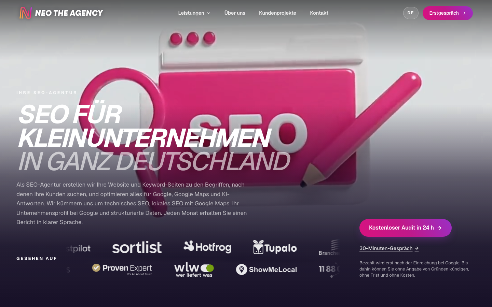
seo-agentur-1440.png
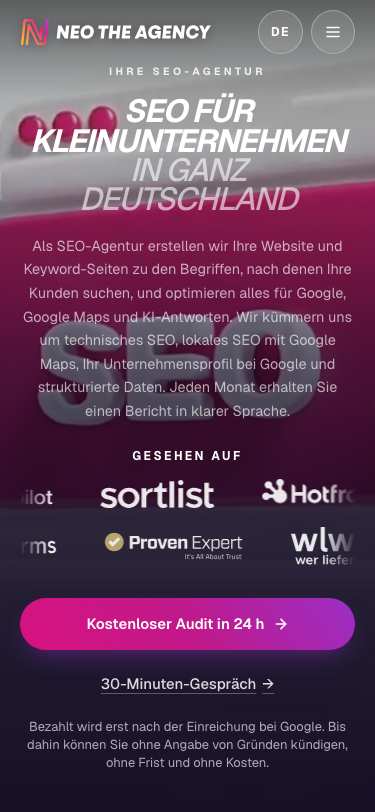
seo-agentur-375.png
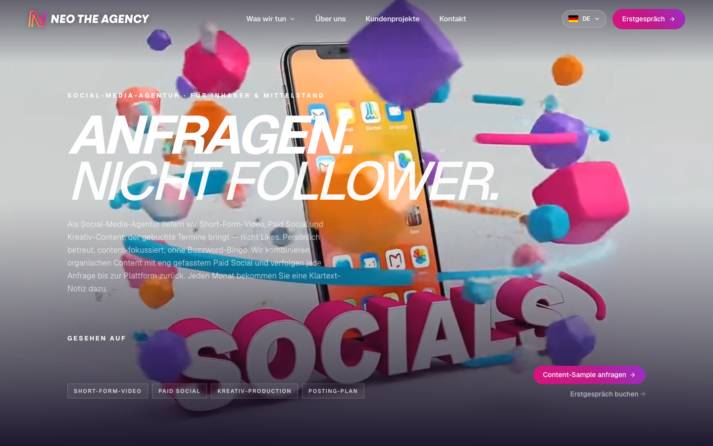
social-media-agentur-1440.png
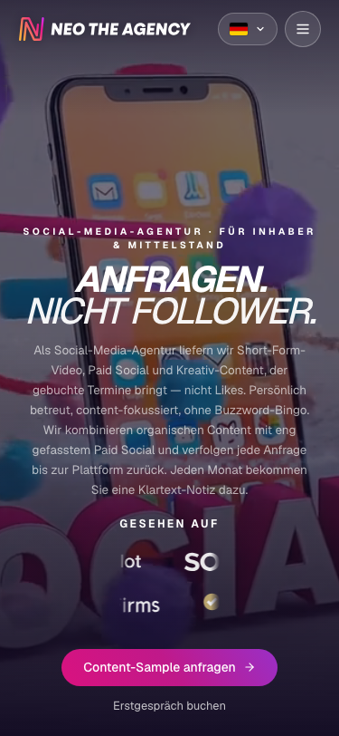
social-media-agentur-375.pngwebdesign-agentur-1440.png

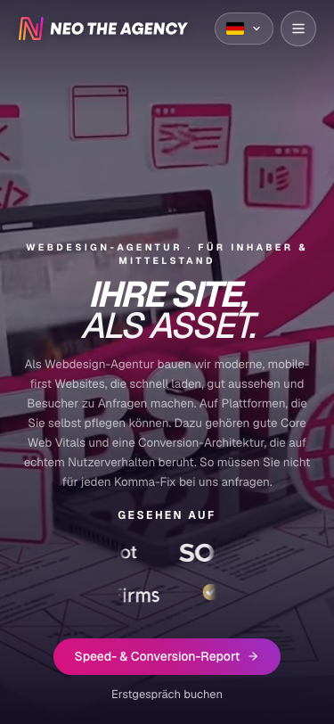
webdesign-agentur-375.pngCost of this check
Firecrawl: 24 credits of about 30 planned. Semrush: 0 units.
Saved work
Live on main: a9bf23e, dced2cc, b993a90, 918b349, 637f4bf.
wp-handoff.json in this folder holds the finished text and settings of all 8 pages for the WordPress rebuild.
Next steps
- Raoul answers the open facts above.
- Rebuild the 8 pages 1:1 in WordPress on the NEO hosting account, with Yoast green on every page and category.
- Raoul's final review, then launch, then Google submission.
Changelog
- v1.0 (26.11.2026): first version.